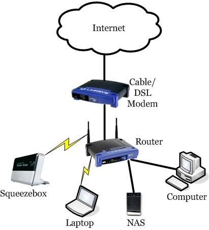

INTERNET

Figure 1: Global interconnection of networks via protocols.
The Internet is defined as a massive public broadcast medium and a worldwide system of interconnected computers that cooperate to exchange data using a common software standard. It originated in 1969 as a military experiment to share computer resources efficiently but has grown to include billions of users who communicate across mixed technologies via telephone lines and satellite links.